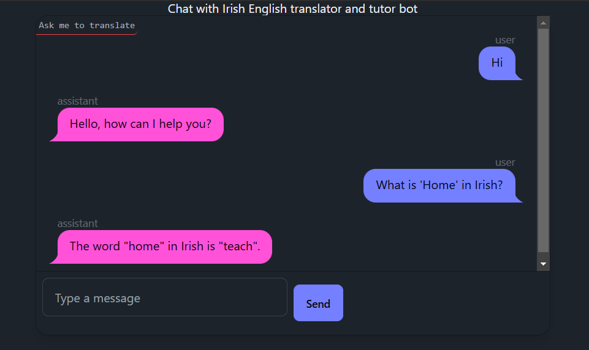

Developing high-quality machine translation systems for low-resource languages like Irish presents significant challenges. While large language models have shown impressive translation capabilities, smaller models that are more practical to deploy often struggle to achieve acceptable quality. In this post, we’ll explore an approach to fine-tuning a smaller language model for English-Irish translation using techniques like two-stage training with parallel corpora and Direct Preference Optimization. The goal is to create a cost-effective, deployable model that can be integrated into applications like an interactive translation tool.

Previous work on low-resource language model training, such as UCCIX’s Irish LLM, relied on filtering data from common web crawls. However, for this project, we instead used the parallel English-Irish corpus of legislation collected by Gaois. This corpus contains high-quality, human-translated paragraph pairs, making it a valuable resource. One draw-back is uses a lot of legal formal language, so to imporve diversity I also included Tatoeba, which is a large database of sentences and translations, the results from the voluntary contributions of thousands of members.
With the Gaois Irish legislation data, we had over 900k rows of parallel Irish and English paragraphs. Minor misalignments, specifically non-matching Irish-English sentence pairs, were more prevalent in shorter sentences and were excluded. The final dataset breakdown:
- Included entries: 628,942 (63.9%)
- Excluded entries: 354,967 (36.1%)
- Random sub-sample: 14,000
Due to computational cost, a 14k random subsample was used for the initial model development. The most advanced model available at the time, GPT4o, was used to translate the examples to ensure even the rejected (non-preferred) translations were of good quality.
Preference Optimization Approach
To fine-tune the translation model, we applied concepts from both UCCIX’s work and Huggingface’s Contrastive Preference Optimization (CPO) approach, with some adjustments.
Xu et al. 2023 found a two-stage approach worked best on LLama-2, using a large amount of monolingual examples followed by a supervised fine-tuning (SFT) stage on parallel data along with instructing the model to translate. UCCIX used a similar two-stage approach but reversed the order, starting with SFT on parallel data to establish cross-lingual relationships, followed by monolingual data to capture cultural nuances.
However, relying solely on human-translated “gold standard” examples for SFT can limit performance. Leveraging reference-free evaluation models like COMET-XXL (Unbabel/wmt23-cometkiwi-da-xxl) from Unbabel allows scoring translations without a human reference by treating the evaluation as a quality estimation problem.
Using COMET-XXL, we scored translations from GPT4o and selected the higher scoring one as the preferred example, with human translations favored in case of ties. This produced a dataset of both accepted and rejected translations suitable for training with Direct Preference Optimization (DPO). DPO relies on labeled preference data rather than just positive examples.
UCCIX’s work expanded the base Llama-2 tokenizer vocabulary to better handle Irish-specific tokens, such as fadas (accented characters), improving performance and generation speed. However, this adjustment may have contributed to some degradation in English performance, a phenomenon they termed “catastrophic forgetting.” Huggingface similarly reported reduced English performance in their experiments. Following their approach, I used the ReliableAI/UCCIX-Llama2-13B-Instruct model, which was already fine-tuned via supervised fine-tuning (SFT), as the base for the second phase of fine-tuning using preference optimization methods like CPO/DPO.
Huggingface employed CPO, which addresses certain memory and performance concerns associated with DPO while maintaining the same preference dataset structure. They also provide a dedicated CPOTrainer for this approach. However, I opted for the DPO algorithm as it is better supported by Axolotl.
Data Formatting scripts
See my specific repo for this part here. Data downloaded from Tatoeba (community generated pairs) and Gaois (legislation pairs).
585265,Go raibh míle maith agat!,
1564,Thank you very much!The two datasets are in differing formats, so need two separate notebooks to format them (for example, Gaois is very large after concatenating the thx files, so we take a subsample).
- `irish_eng_data_final_1st_ds_Gaois.ipynb
- `irish_eng_data_2nd_ds_Tatoeba.ipynb
We then use the GPT4o API to translate in both directions and saved as translated.jsonl
{
"en": "DAIRY PRODUCE (PRICE STABILISATION) ACT, 1933",
"ga": "ACHT TORA DÉIRÍOCHTA (PRAGHAS DO DHÉANAMH SEASMHACH), 1933.",
"gpt_4_ga": "ACHT UM SHOCRÚ PRAGHAS TÁIRGÍ DAIRÍ, 1933",
"gpt_4_en": "DESTRUCTION OF WEEDS (STABILIZATION OF PRICE) ACT, 1933."
}After dataset is stored locally, run the download_cometxxl.py which downloads the reference comet model free to evaluate translations. The model from provided Huggingface Hub path, in this case Unbabel/wmt23-cometkiwi-da-xxl.
Once data model is downloaded to a Modal Labs Volume like so:
┏━━━━━━━━━━━━━━━━┳━━━━━━┳━━━━━━━━━━━━━━━━━━━━━━━━━━━━━━━━━━━━┳━━━━━━━━━━┓
┃ Filename ┃ Type ┃ Created/Modified ┃ Size ┃
┡━━━━━━━━━━━━━━━━╇━━━━━━╇━━━━━━━━━━━━━━━━━━━━━━━━━━━━━━━━━━━━╇━━━━━━━━━━┩
┡━━━━━━━━━━━━━━━━╇━━━━━━╇━━━━━━━━━━━━━━━━━━━━━━━━━━━━━━━━━━━━╇━━━━━━━━━━┩
│ checkpoints │ dir │ 2024-12-30 17:14 GMT Standard Time │ 0 B │
│ README.md │ file │ 2024-12-30 17:14 GMT Standard Time │ 4.0 KiB │
│ LICENSE │ file │ 2024-12-30 17:14 GMT Standard Time │ 20.3 KiB │
│ .gitattributes │ file │ 2024-12-30 17:14 GMT Standard Time │ 1.5 KiB │
│ .cache │ dir │ 2024-12-30 17:14 GMT Standard Time │ 11 B │
└────────────────┴──────┴────────────────────────────────────┴──────────┘We grade the translations script_cometxl_scorer.pywhich also formats the dataset into what cometxl expects (with src and mt columns). The system_score is there to average multiple reference model scores, but in this case we only used one model). The reference free model then grades the translations between 0-100 with closer to 100 being a ‘perfect’ translation.
{"src": "Thank you very much!", "mt": "Go raibh míle maith agat!",
"direction": "en-ga",
"cometkiwi_score": 0.8342427015304565,
"system_score": 0.8342427015304565}
{"src": "Go raibh míle maith agat!",
"mt": "Thank you very much!",
"direction": "ga-en",
"cometkiwi_score": 0.8411319851875305,
"system_score": 0.8411319851875305}Once graded, we format it a final time to what DPO would expect using script_preference_ds_formatter.py and the higher rated translations are placed in accepted and the latter in rejected.
{"prompt": "Search Cuardach",
"chosen": "Cuardach",
"rejected": "Cuardach Search"}
{"prompt": "Cuardach Search",
"chosen": "Search Cuardach",
"rejected": "Search"}The dataset is ready to finetune a chosen model via Axolotl (hosted on Jarvis Labs).
Model Training
With the preference data prepared, the model was fine-tuned using Axolotl, a tool for streamlining training across different model configurations. Axolotl recently added support for DPO.
The training config was based on the Axolotl example for Llama-3 models:
rl: dpo
datasets:
- path: c123ian/irish_eng_transl_2k_test_uuix
split: train
type: chatml.intel
adapter: qlora
lora_model_dir:
sequence_len: 4096
sample_packing: false # set false for RFL The preference dataset was structured based on the Intel/orca_dpo_pairs format expected by Axolotl. Here’s an example below, notice subtle difference in the translations:
{"system": "You are an AI assistant. You will be given a sentence to translate:", "question": "You need not come to the office on Saturdays.",
"chosen": "Ní gá duit dul go dtí an oifig gach Satharn.",
"rejected": "Ní gá duit teacht chuig an oifig ar an Satharn."}
{"system": "You are an AI assistant. You will be given a sentence to translate:", "question": "Ní gá duit dul go dtí an oifig gach Satharn.",
"chosen": "You need not come to the office on Saturdays.",
"rejected": "You don't have to go to the office every Saturday."} Once the data and config were ready, the model was trained using:
python3 -m axolotl.cli.train examples/llama-3/instruct-dpo-lora-8b.yml
After training, the LORA adapter was merged with the base model:
python3 -m axolotl.cli.merge_lora your_config.yml --lora_model_dir="./completed-model"
The merged model was then pushed to the Huggingface Hub for deployment.
Deployment
To make the model easily accessible, an interactive web application was built using the FastHTML framework. The app provides a chat interface for users to converse with the model and request translations.
The core application logic, including model inference, was implemented using Modal, a platform for deploying machine learning applications. Modal’s decorators were used to define API endpoints and configure the vLLM for accelerated inference.
You can see the full source code for the application here. A live demo of the English-Irish translation assistant is available to try out here. Note that the demo is currently using the UCCIX-Instruct model while final testing of our fine-tuned model is underway.
Conclusion
This project demonstrates an approach for fine-tuning a compact language model for high-quality translation of a low-resource language pair like English-Irish. By combining techniques from prior work, including two-stage training on parallel and monolingual data, expanded vocabulary tokenization, and preference optimization using DPO, we were able to create a deployable model that can be integrated into downstream applications.
Some key learnings and takeaways: - High-quality parallel corpora, even if smaller in size, can be more effective than larger but noisier datasets from general web crawls. - Reference-free evaluation using models like COMET-XL enables optimization beyond human-labeled examples. - Expanding the tokenizer vocabulary for the target language can boost performance but may impact source language quality. - Emerging tools like Axolotl are making it easier to experiment with different RFHL fine-tuning approaches like DPO.
There are many promising directions to build on this work, such as: - Comparing DPO with other preference learning approaches like CPO. - Investigating techniques to mitigate negative effects on source language performance. - Expanding the application to support more advanced features like contextual translation and conversation history (see my other project which uses a LLM and Conversation History here)
Developing practical machine translation systems for under-resourced languages is an important challenge. Hopefully, the approach outlined here can serve as a starting point for others working to bring the benefits of large language models to these languages and communities.